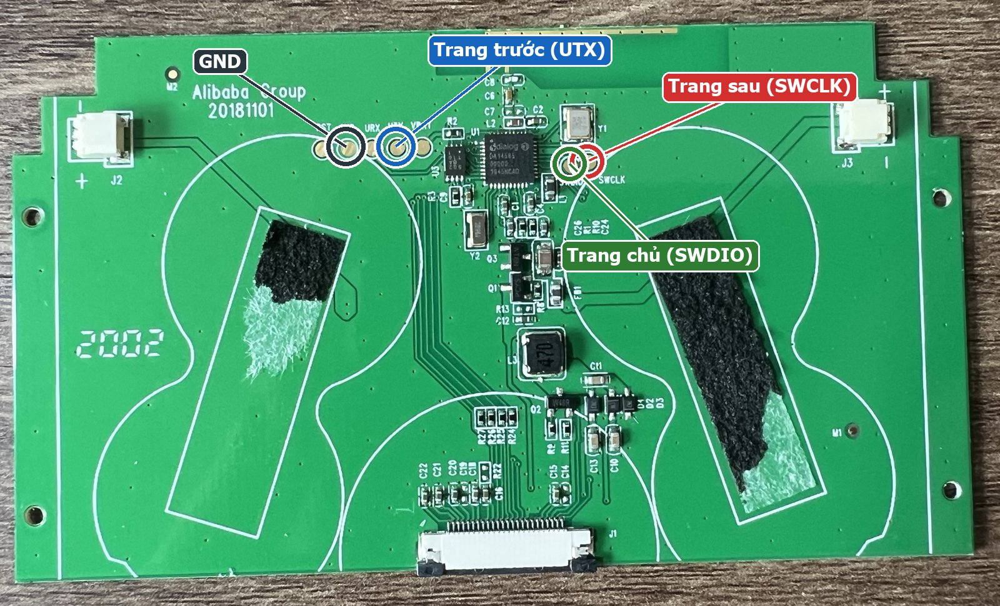
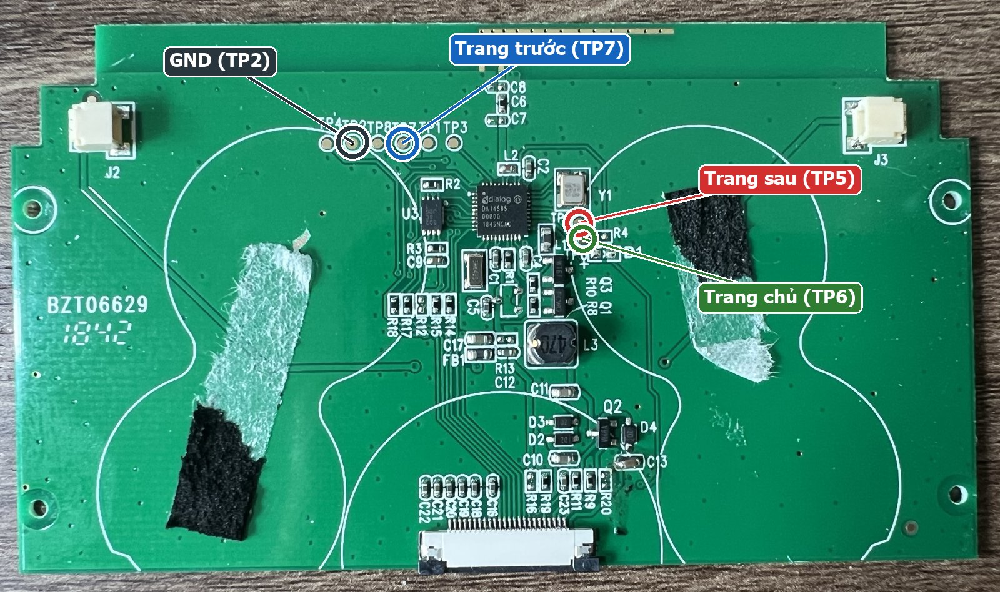

Gửi sách chữ / truyện tranh xuống thiết bị qua Bluetooth (firmware r2.x)
.txt, .epub (sách chữ) — .cbz/.zip hoặc nhiều file ảnh (truyện tranh) — .mobi/.azw3 không DRM (nếu không đọc được hãy chuyển sang epub/txt bằng Calibre). Kho sách trong máy ~260KB; chữ Việt nén 8-bit nên tương đương ~350KB file .txt. Sách dài tự chia thành nhiều phần, mỗi lần gửi một phần (gửi phần mới thay phần cũ; máy tự lưu trang đang đọc của phần hiện tại).
Hàn 3 nút từ các điểm test xuống GND (nhấn = nối đất, nên nối tiếp điện trở ~1kΩ). Mặc định: trang sau = SWCLK (P1_4), trang trước = TX (P0_4), trang chủ = SWDIO (P1_5). Đừng hàn vào pad RX/URX hay VBAT. Không có nút nguồn: bật/tắt Bluetooth nằm trong menu Trang chủ trên máy. Ở màn Trang chủ, hai nút trang sau/trước di chuyển menu, nút trang chủ chọn. Chân trùng với chân màn hình sẽ bị firmware tự tắt; SWCLK/SWDIO dùng được vì build đã tắt debug SWD (đừng đè nút khi đang nạp firmware bằng J-Link).


Chỉ nạp firmware dòng máy đọc sách (fw_reader_4_2inch_rX.Y.bin). Từ bản r2.0 (map 512KB) kho sách nằm ngoài vùng OTA nên cập nhật firmware giữ nguyên sách; máy đang chạy bản cũ (map 256KB) thì lần cập nhật ĐẦU TIÊN vẫn xóa sách — gửi lại sau khi lên bản mới.